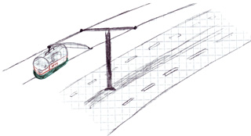

Alternatif bir toplu taşım aracı önerisi
October 30, 2010 Trafiğin çok yoğun olduğu belli konumlara baktığımda çoğunlukla çevresindeki yapılar nedeniyle yolun genişletilebilir olmadığını görüyorum. Google’ın 10 üssü 100 projesi kapsamında desteklediği Shweeb projesinden de biraz esinlenerek düşündüğüm insan gücüyle çalışan, tek veya iki kişilik teleferik hatları projesi ile daha eğlenceli, daha sağlıklı, daha çevre dostu ve trafikten uzak bir toplu taşım sağlanabilir. Çizimim çok iyi olmasa da aşağıdaki çizim ile projeyi basit olarak görselleştirmeye çalıştım.
Böyle bir uygulamanın kurulum ve bakım maliyeti yüksek olmaz mı? Kurulum maliyeti belki yüksek olabilir ama kabinler aydınlatma dışında hiçbir elektronik aksam içermeyeceğinden maliyeti bir bisikletin maliyetinden çok da fazla olmayacaktır. Kompleks bir yapıda olmadığından kabinlerin bakımı da fazla problem olmayacaktır.
Kullanıcıların bu araçları toplu taşım dışı amaçlarla kullanmasını nasıl önleyebiliriz? Örneğin insanlar bu kabinleri durak olmayan noktalarda park edip boğaz manzaralı kahvaltı amaçlı kullanabilirler. Bunu engellemek için durağa zamanında gelinmesi durumunda kabine binerken karttan otomatik olarak alınan ücretin bir bölümünün karta geri yüklenmesi ile sağlanabilir.
Herkesin aynı hızda pedal çevirmesini sağlayamayız, kabinlerin birbirini sollaması nasıl sağlanabilir? Bu problem ikinci bir kablo hattı ile çözülebilir. Bir hattan diğerine örnek çizimde de görülen bağlantı iskeleti ile geçilebilmesi sağlanabilir.
Peki, yokuş yukarı çıkarken ne yapacağız? Eğimi yüksek olmayan yokuşlarda biraz spor yapacağız. :) Daha yüksek eğimli yokuşlarda (örn Barbaros Bulvarı, Beşiktaş) ise istasyonlara yerleştirilecek motorlar ile kabloların sabit hızda ilerlemesi sağlanabilir.
Bunların dışında çarpışma durumunda insanların ve kabinlerin zarar görmesini mümkün olduğunca önlemek için araçlarda kauçuk tamponlar kullanılabilir.
Böyle bir projenin uygulanabilirliği tartışılır tabi ama hayal kuruyoruz işte, ciddi bir proje yok ortada. :)